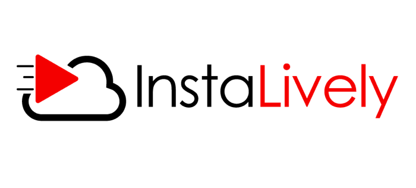
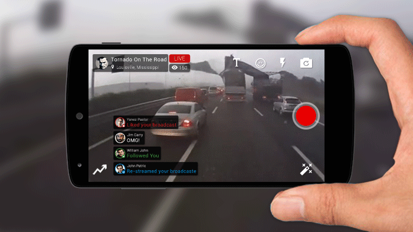
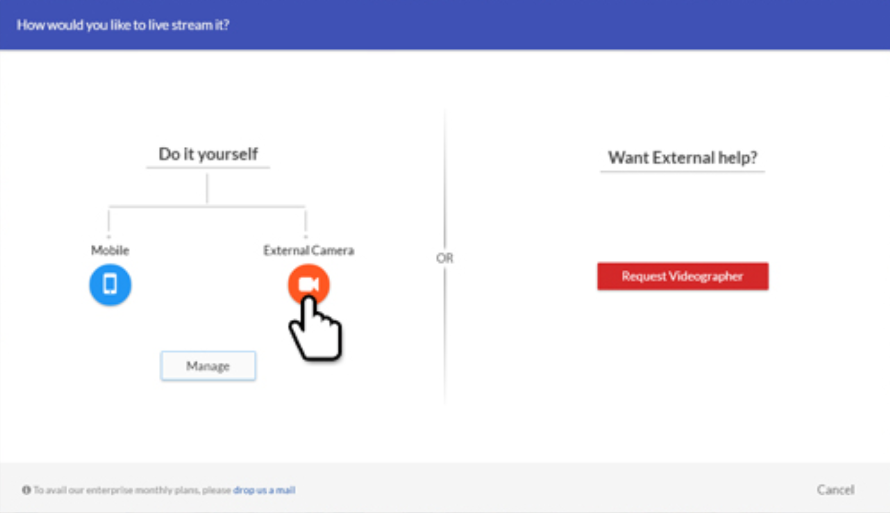
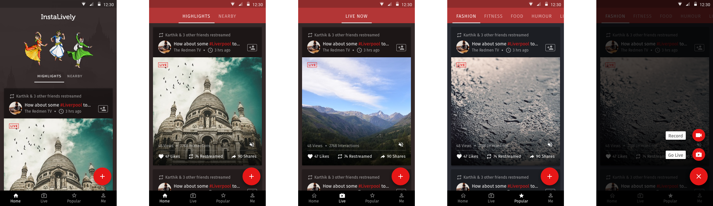
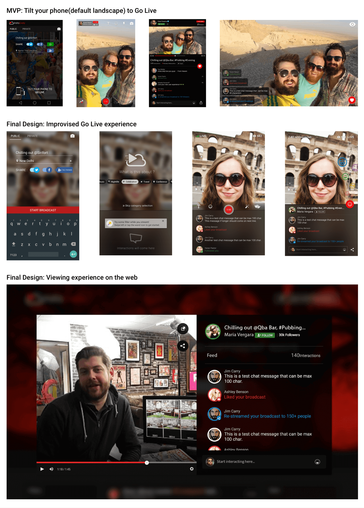

InstaLively Takes On Periscope And Meerkat
Background
The InstaLively platform helps broadcast any event LIVE in just a single click, and directly link it up to your Youtube Channel. Our focus is on Instant Video/ Audio Digitization on low 3G bandwidths using just a Mobile app - Making it as simple and cost-effective as possible for the everyday enterprise to create/ broadcast content from any location, thereby democratizing Online Video.
Instalively was backed by multiple angel investors including GSF Accelerator’s Rajesh Sawhney, Google MD Rajan Anandan, SlideShare Co-Founder Amit Ranjan, Anupam Mittal the Founder of People Group, Uday Shankar the Chairman of Star India, and the author Chetan Bhagat. This was followed by Series A round from SAIF Partners.
Press 👉 huffingtonpost ↗ techcrunch ↗ inc42 ↗

My Role
I was approched to work on the streaming application as an independent Freelancer and later became part of the founding team. I wore multiple hats across the journey ranging from Product design, Creative design and Web-front-end.
Problem Statement
Cross-platform low band-width video delivery that is also cost-effective is required in the Asian market to enable everyday enterprise to create/ broadcast content from any location, thereby democrise online video.
Design Principles and process
- Build on what we love.
The best logic is so natural, we feel like it was our idea. Rather than designing for what’s new, I look to metaphors for what we already know and love.
- Show who we could be.
The most compelling product is a better portrait of ourselves. Rather than designing for what’s accessible, I design for moments of potential.
- Create that together.
Often users are the best designers. Rather than solving every problem myself, I try to design platforms around who and what we already share.
Being a small team with cost and time constraints limits your breath of research so we would rely on post-event(live-stream) user feedbacks and make WhatsApp groups of influencers from the platform to gather intel. There's no room for A/B test or usability studies. Collective intelligence is what you have to rely on.

Whiteboard was the favorite tool at the moment
How Does It Work?
InstaLively was catering to both the worlds - B2C and B2B. The secret sauce was YouTube Livestreaming API which enabled us to seamlessly integrate with one's Youtube channel allowing users to go LIVE simultaneously across social media platforms.

In the B2B world
Clients have two livestreaming modes – 'Do-it-Yourself' free to use for advance users and the latter 'Hire-a-Videographer' enables you to request professional videographer who comes to your event location(Uber-esque) on the click of a button to livestream and record the event.
Livestreaming modes. Only on Web and desktop solution
Checkout the guide we made for our clients 👉 Instalively_web_tutoria.pdf
Free to use B2C app
It was the mobile B2C app that we concentrated the most, because why not? This is the space where we’d acquire users in mass and spread the Livestreaming awareness as the world goes mobile 1st and phone cameras get more powerful. Adding comparision from MVP to the final design release of the mobile app -
Prototype of the onboarding experience

Home-screen: Content discovery

Customise streem

Going live from mobile & viewing on web
How Successful was it?
Over 1000K+ minutes were broadcasted by 25k users across gloab including 100+ influencers getting over 10K views per stream. In February 2017 Instalively got acquired by India's leading messaging app Hike Messenger.
Checkout some popular streams made on InstaLively 👇
Find more on Instalively's YT Channel: InsaLively's Youtube Channel And thanks for reading 🙌